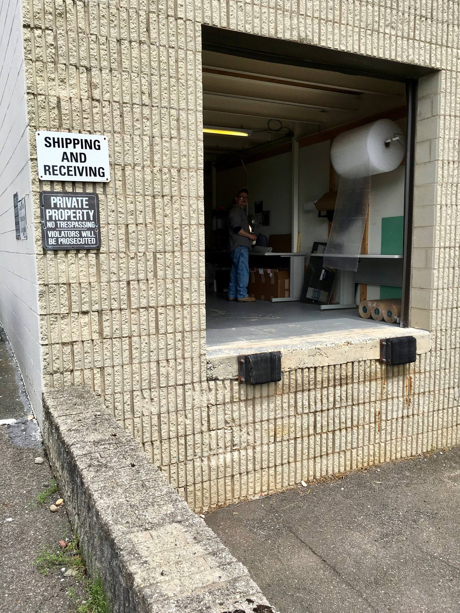

Crematory Thermocouples Replacements
Reliable, American-Made Assemblies to Keep Your Retort Running.
Orders before 2pm EST processed same day.
When a critical thermocouple fails, you need a reliable replacement part you can trust—fast. For over a century, National Basic Sensor has been the expert source for high-quality, durable temperature sensors. We supply standard Type K crematory thermocouple assemblies in all common sizes (12", 18", and 24") that are in stock and ready for same-day processing, ensuring you minimize downtime and maintain operational compliance.
Our Products
Replacement Elements & Parts
A cost-effective solution for maintenance and repair. Replace a worn or failed element without buying a full new assembly. Terminal blocks also available.
Custom & OEM Solutions
Need to match a specific OEM part or require a unique length, fitting, or material? Our in-house engineers can build a custom solution for your exact application.
Request a Quote
Have a unique requirement or need to match an OEM part? Fill out the form below, and our specialists will provide a detailed quote.
Why Choose Us
Built to Last
A cheap, unreliable probe can cost you thousands in downtime and repeated replacements. Our assemblies are manufactured on-site in Pennsylvania using ASME-certified welding and robust 8-gauge elements, ensuring they withstand the extreme conditions of your retort.
Accuracy You Can Document.
NIST traceable calibration (-78°C to 1454°C). ISO 9001:2015 certified & ISO/IEC 17025 compliant for guaranteed accuracy.
Access to Application Expertise
Choosing the right thermocouple isn't just about matching a part number; it's about understanding the application. Our in-house specialists are trained in thermodynamics and material science. We don't just sell parts—we provide engineering-level support to ensure you have the optimal sensor for your specific retort model and operational conditions.

Frequently Asked Questions
Will these thermocouples fit crematory retorts?
Yes. We offer standard 12″, 18″, and 24″ Type K assemblies with 3/4″ NPT fittings, and can match other specs on request.
- Replacement elements available separately.
- For other sizes or fittings, call 800-642-1357.
What's included in a complete assembly?
An 8-gauge Type K element, a mullite protection tube, a terminal block, and an aluminum connection head.
Do you provide calibration certificates?
Yes. NBS offers NIST-traceable calibration in an in-house lab that maintains reference standards and operates from −78 °C to 1454 °C, with ISO 9001:2015 certification and 17025 compliance.
Grounded vs. ungrounded—how do I choose?
Choose grounded for faster response; ungrounded for more electrical isolation.
- If you're unsure, share your make/model and location (primary/secondary); our specialists will advise options.
What information helps you quote the right replacement?
Cremator make/model, probe location (primary or afterburner), OD and immersion length, and any markings/photos.
When will my order be processed?
- Orders received after 2 pm EST are processed the following business day.
- Orders received before 2 pm EST are processed the same business day (processing ≠ shipping).
Do you offer custom lengths or materials?
Yes. NBS custom manufactures thermocouples/RTDs (lengths, diameters, fittings, and materials including Inconel, Stainless, and ceramic options).
How often should a crematory/retort thermocouple be replaced?
There isn't a fixed interval—replacement depends on conditions and tolerance requirements.
- Replace if damaged, drifting out of tolerance, or if your maintenance schedule calls for it.
- NBS can calibrate assemblies and document results for your records.
Can you match my existing OEM thermocouple?
Yes. NBS provides identification and evaluation and can match OEM specifications; documentation is kept for easy reorders.
Do you support other thermocouple types?
Type K is standard for the listed assemblies; other types (e.g., N, R, S) are available through NBS on request.
Retort Down? Need Immediate Help?
Call 800-642-1357 • Orders before 2pm EST processed same day